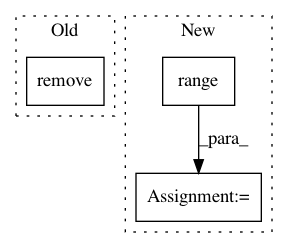

96416b889c76f3b6d15af0e3dfd0d4cb2b8b2d23,examples/paillier_logistic_regression.py,,download_data,#,40
Before Change
with tarfile.open(foldertar) as tar:
tar.extractall("examples/")
os.remove(foldertar)
def preprocess_data():
After Change
n_datasets = 2
for d in range(1, n_datasets):
if not os.path.isdir("examples/enron%d" % d):
print("Downloading %d/%d:" % (d, n_datasets), url1)
foldertar = "examples/emails.tar.gz"
with urlopen(url1) as remotedata:
with open(foldertar, "wb") as tar:
tar.write(remotedata.read())
with tarfile.open(foldertar) as tar:
tar.extractall("examples/")
os.remove(foldertar)
def preprocess_data():
Get the Enron emails from disk.
Represent them as bag-of-words.
In pattern: SUPERPATTERN
Frequency: 3
Non-data size: 3
Instances
Project Name: data61/python-paillier
Commit Name: 96416b889c76f3b6d15af0e3dfd0d4cb2b8b2d23
Time: 2017-06-15
Author: giorgio.patrini@anu.edu.au
File Name: examples/paillier_logistic_regression.py
Class Name:
Method Name: download_data
Project Name: yzhao062/pyod
Commit Name: f7274c1889e6c31ab89dc0409fa2ac92e6f01228
Time: 2019-03-11
Author: yalmardeny@tssg,org
File Name: pyod/models/sod.py
Class Name: SOD
Method Name: _snn
Project Name: hyperspy/hyperspy
Commit Name: 527a17bdda2956928507057adcf9c139c34cb498
Time: 2016-07-18
Author: eric.prestat@gmail.com
File Name: hyperspy/io_plugins/protochips.py
Class Name: ProtochipsCSV
Method Name: _read_data